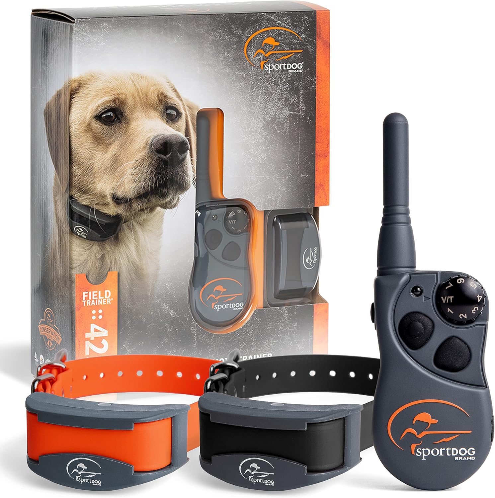
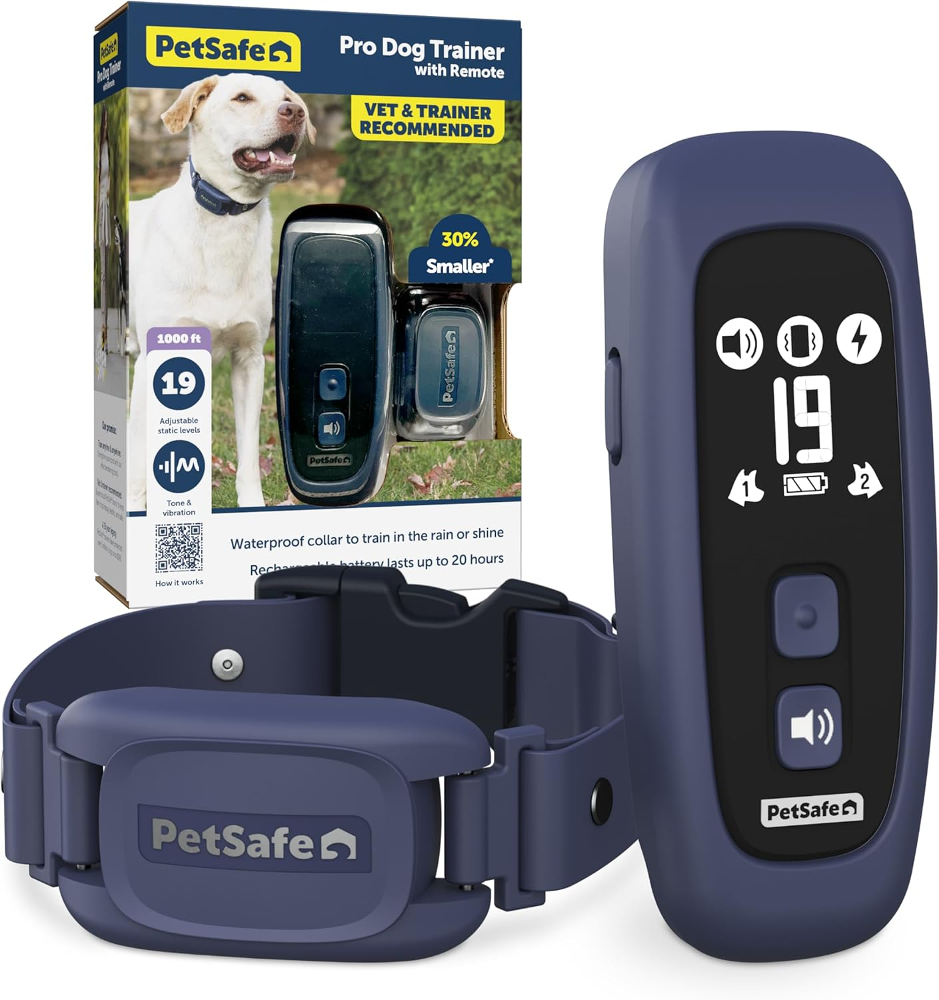
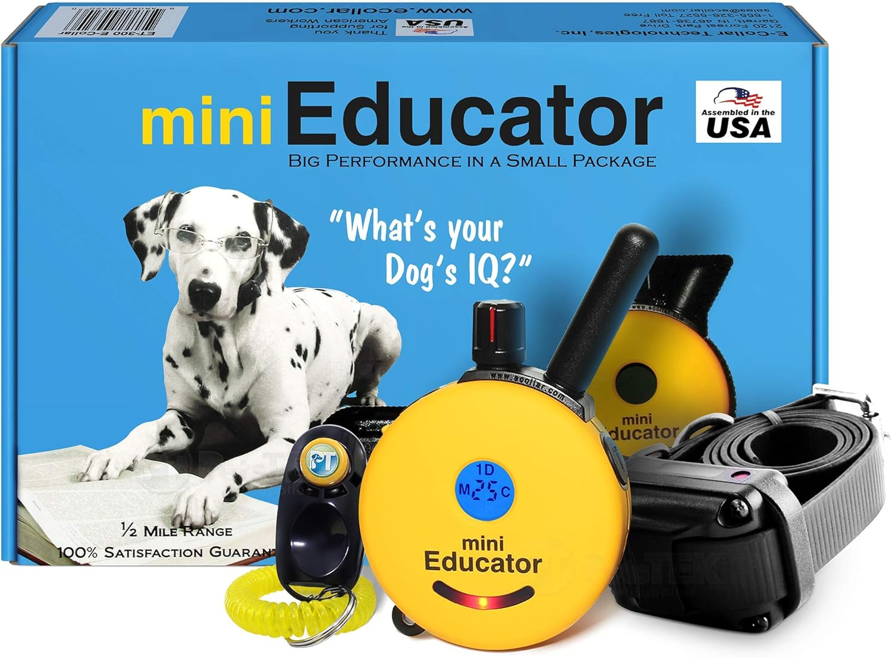

Best Dog Training Collar 2025: Complete Comparison Guide
Important Safety Information
Training collars should only be used under proper guidance and with positive reinforcement methods. Always consult with a professional dog trainer before using any correction-based training device. This guide focuses on safe, humane training collar options.
Quick Picks for Effective Dog Training
What's in This Guide
Choosing the right dog training collar can make the difference between successful training and frustrating setbacks. With dozens of options claiming to be "humane" and "effective," finding the right balance of functionality and safety requires careful research.
We analyzed over 30 training collar systems, reviewed veterinary guidance on safe usage, and consulted with professional dog trainers to identify the most effective options for different training scenarios and dog temperaments.
Understanding Different Types of Training Collars
Modern training collars offer various correction methods, each suited to different training goals and dog personalities.
Remote Training Collars
These systems include a handheld transmitter that controls the collar. Most offer multiple correction types including vibration, tone, and adjustable static correction. Range typically varies from 100 yards to over half a mile.
Vibration-Only Collars
Provide gentle vibration correction without static stimulation. Ideal for sensitive dogs or owners preferring non-static training methods. Less effective for highly distracted or stubborn dogs.
Bark Control Collars
Automatically activate when they detect barking. Available in vibration, citronella spray, or static correction versions. Useful for addressing excessive barking behavior.
GPS Training Collars
Combine training features with GPS tracking and geofencing. More expensive but valuable for hunting dogs or dogs that roam large properties.
Top 5 Dog Training Collars Compared
1. SportDOG Brand FieldTrainer 425X - Best Overall
A professional-grade system offering 21 levels of static correction, vibration, and tone options. The 500-yard range and waterproof design make it suitable for various training environments. DryTek technology ensures reliability in wet conditions.
Pros
- 21 levels of precise correction control
- Waterproof and submersible design
- 500-yard operational range
- Long battery life (50-70 hours)
- Expandable to train multiple dogs
Cons
- Higher price point ($150-200)
- May be overwhelming for first-time users
- Requires understanding of proper training techniques
Best For: Experienced dog owners training hunting dogs, working breeds, or dogs requiring advanced off-leash control.
Check Current Price on Amazon2. PetSafe Basic Remote Trainer - Best for Beginners
A simplified system designed for first-time users. Features 8 levels of static correction plus vibration and tone. The 300-yard range covers most residential training needs while built-in safety features prevent over-correction.
Pros
- Simple, user-friendly interface
- Built-in safety timeout feature
- Tone and vibration-only training modes
- Good value at $80-120 price range
- Comprehensive training manual included
Cons
- Limited range (300 yards)
- Only 8 correction levels
- Not expandable to multiple dogs
- Less durable than professional models
Best For: New dog owners seeking basic obedience training with safety features and comprehensive guidance.
Check Current Price on Amazon3. Educator E-Collar Remote Trainer - Best Vibration-Only Option
Professional-quality collar focusing on positive reinforcement methods. Offers 100 levels of vibration intensity plus tone and LED light options. The "blunt" vibration feels more like a tap than a buzz, making it less startling for sensitive dogs.
Pros
- 100 levels of vibration control
- No static correction - vibration only
- Professional build quality
- Half-mile operational range
- Suitable for sensitive or anxious dogs
Cons
- Premium pricing ($200-300)
- May be insufficient for highly distracted dogs
- Requires patience for training progress
Best For: Owners preferring positive-only training methods or dogs sensitive to traditional correction methods.
Check Current Price on AmazonSafety Considerations and Proper Usage
Fitting and Placement
The collar should fit snugly but allow one finger to slip underneath. Contact points should touch the skin without creating pressure. Rotate collar position daily to prevent skin irritation.
Training Session Guidelines
- Limit sessions to 10-15 minutes maximum
- Start with lowest effective correction level
- Always pair corrections with verbal commands
- End sessions on a positive note
- Remove collar when not actively training
When NOT to Use Training Collars
Avoid using training collars on dogs under 6 months old, dogs with neck injuries, or extremely anxious dogs. Never use as punishment after the fact - corrections must occur during the unwanted behavior.
| Collar Type | Best For | Price Range | Effectiveness |
|---|---|---|---|
| Remote Static | Advanced training | $100-300 | High |
| Vibration Only | Sensitive dogs | $80-250 | Moderate |
| Basic Remote | Beginners | $60-150 | Good |
| GPS Training | Large properties | $200-500 | High |
Effective Training Techniques
Introduction Phase
Begin with tone or vibration only. Let your dog wear the collar for several days without activation to create neutral associations. Start training in a distraction-free environment.
Command Pairing
Always give verbal command first, followed immediately by collar correction if compliance doesn't occur. This teaches the dog that compliance with verbal commands prevents collar activation.
Positive Reinforcement Integration
Immediately reward correct responses with treats, praise, or play. The collar provides clear communication; positive reinforcement motivates continued cooperation.
Frequently Asked Questions
Training collars are safe when used properly on healthy adult dogs. Avoid use on puppies under 6 months, dogs with neck problems, or extremely anxious dogs. Always consult your veterinarian before starting collar training.
Remove the collar after each training session. Never leave a training collar on for more than 8-10 hours total per day. Rotate position daily to prevent skin irritation from contact points.
Vibration provides a physical sensation similar to a cell phone buzz. Static correction delivers a mild electrical stimulation. Both are adjustable and designed to get attention rather than cause pain when used properly.
Yes, but bark-specific collars work better for this purpose. Regular training collars require manual activation and aren't practical for addressing barking when you're not present.
Start at the lowest level and increase gradually until you see your dog's ears perk up or they show awareness of the correction. The goal is communication, not discomfort. Most dogs respond to levels well below maximum settings.
Making the Right Choice
The best training collar depends on your dog's temperament, your experience level, and specific training goals. Beginners should start with simpler systems that include comprehensive training guides and safety features.
Remember that training collars are communication tools, not punishment devices. Success requires consistency, proper timing, and integration with positive reinforcement methods. Consider working with a professional trainer, especially during initial training phases.
Affiliate Disclosure: ThePetProductLab participates in affiliate programs including Amazon Associates. We may earn commissions on qualifying purchases made through our links at no extra cost to you. All recommendations are based on research and professional consultation.